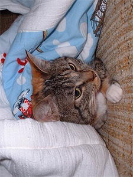
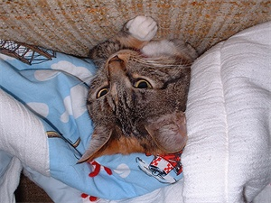
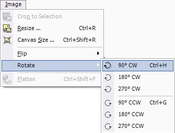

Rotate Operation
|  The Rotate Operation (Image-->Rotate) allows the user to rotate the entire image (including all of the layers) to one of three possible angles in either the clockwise (CW) or the counter-clockwise direction (CCW). |
| Below is an
example of using the Rotate Operation on an image: |
| |
|
| This is the Original Image. | 90 degree, clockwise rotation |
|  |
 |
| 270 degree, clockwise rotation | 180 degree, clockwise rotation |